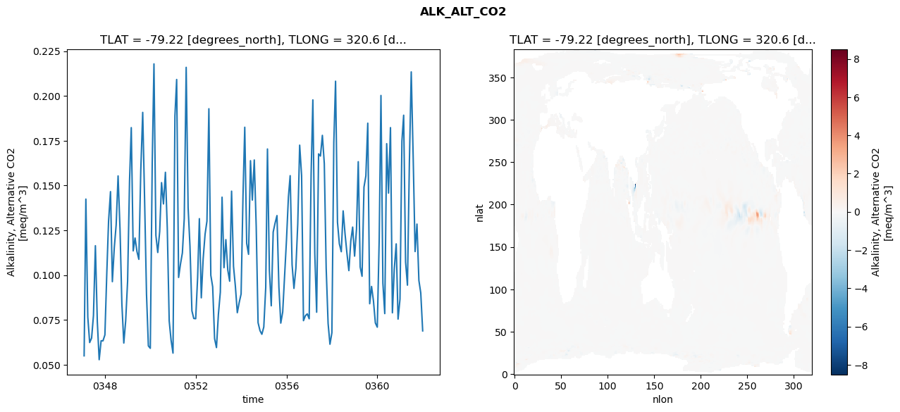
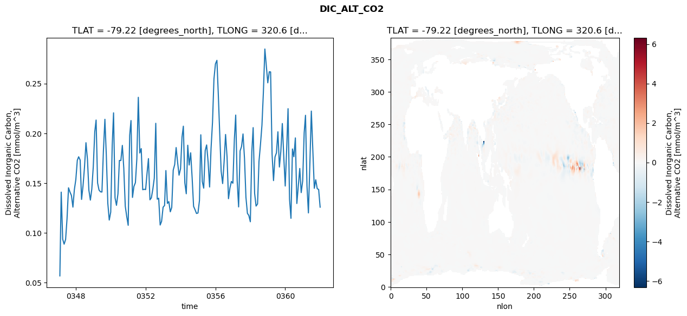
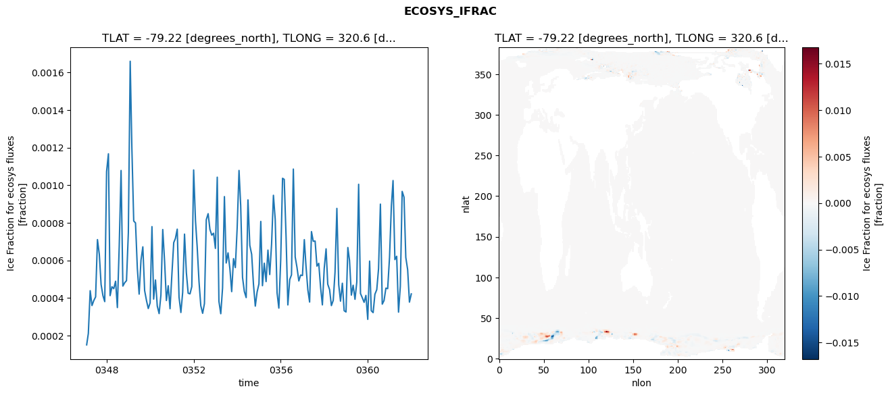

glb-dor_North_Atlantic_basin_003_1999-01-01_00012#
Simulation details#
Case: smyle.cdr-atlas-v0.glb-dor_North_Atlantic_basin_003_1999-01-01_00012.001
Basin: North_Atlantic_basin
Polygon: 3.0
Start date: 1999-01
Show code cell source Hide code cell source
import xarray as xr
import matplotlib.pyplot as plt
Show code cell source Hide code cell source
zarr_store = "/path/to/zarr/store"
# Parameters
zarr_store = "/global/cfs/projectdirs/m4746/Projects/Ocean-CDR-Atlas-v0/data/validation/smyle.cdr-atlas-v0.glb-dor_North_Atlantic_basin_003_1999-01-01_00012.001.validation.zarr"
Show code cell source Hide code cell source
%%time
ds_o = xr.open_zarr(zarr_store).compute()
ds_o
CPU times: user 634 ms, sys: 419 ms, total: 1.05 s
Wall time: 1.25 s
<xarray.Dataset> Size: 2MB
Dimensions: (nlat: 384, nlon: 320, time: 180)
Coordinates:
TLAT float64 8B -79.22
TLONG float64 8B 320.6
ULAT float64 8B -78.95
ULONG float64 8B 321.1
* time (time) object 1kB 0347-02-01 00:00:00 ... 0362-01-01 0...
z_t float32 4B 500.0
Dimensions without coordinates: nlat, nlon
Data variables:
ALK_ALT_CO2_diff (nlat, nlon) float32 492kB nan nan nan ... nan nan nan
ALK_ALT_CO2_rmse (time) float64 1kB 0.05494 0.1424 ... 0.09005 0.06885
DIC_ALT_CO2_diff (nlat, nlon) float32 492kB nan nan nan ... nan nan nan
DIC_ALT_CO2_rmse (time) float64 1kB 0.05686 0.141 ... 0.1436 0.1259
ECOSYS_IFRAC_diff (nlat, nlon) float32 492kB nan nan nan ... nan nan nan
ECOSYS_IFRAC_rmse (time) float64 1kB 0.00015 0.0002107 ... 0.0004213
FG_ALT_CO2_diff (nlat, nlon) float32 492kB nan nan nan ... nan nan nan
FG_ALT_CO2_rmse (time) float64 1kB 4.852e-06 1.114e-05 ... 1.85e-05xarray.Dataset
- nlat: 384
- nlon: 320
- time: 180
- TLAT()float64-79.22
- long_name :
- array of t-grid latitudes
- units :
- degrees_north
array(-79.22052261)
- TLONG()float64320.6
- long_name :
- array of t-grid longitudes
- units :
- degrees_east
array(320.56250892)
- ULAT()float64-78.95
- long_name :
- array of u-grid latitudes
- units :
- degrees_north
array(-78.95289509)
- ULONG()float64321.1
- long_name :
- array of u-grid longitudes
- units :
- degrees_east
array(321.12500894)
- time(time)object0347-02-01 00:00:00 ... 0362-01-...
- bounds :
- time_bound
- long_name :
- time
array([cftime.DatetimeNoLeap(347, 2, 1, 0, 0, 0, 0, has_year_zero=True), cftime.DatetimeNoLeap(347, 3, 1, 0, 0, 0, 0, has_year_zero=True), cftime.DatetimeNoLeap(347, 4, 1, 0, 0, 0, 0, has_year_zero=True), cftime.DatetimeNoLeap(347, 5, 1, 0, 0, 0, 0, has_year_zero=True), cftime.DatetimeNoLeap(347, 6, 1, 0, 0, 0, 0, has_year_zero=True), cftime.DatetimeNoLeap(347, 7, 1, 0, 0, 0, 0, has_year_zero=True), cftime.DatetimeNoLeap(347, 8, 1, 0, 0, 0, 0, has_year_zero=True), cftime.DatetimeNoLeap(347, 9, 1, 0, 0, 0, 0, has_year_zero=True), cftime.DatetimeNoLeap(347, 10, 1, 0, 0, 0, 0, has_year_zero=True), cftime.DatetimeNoLeap(347, 11, 1, 0, 0, 0, 0, has_year_zero=True), cftime.DatetimeNoLeap(347, 12, 1, 0, 0, 0, 0, has_year_zero=True), cftime.DatetimeNoLeap(348, 1, 1, 0, 0, 0, 0, has_year_zero=True), cftime.DatetimeNoLeap(348, 2, 1, 0, 0, 0, 0, has_year_zero=True), cftime.DatetimeNoLeap(348, 3, 1, 0, 0, 0, 0, has_year_zero=True), cftime.DatetimeNoLeap(348, 4, 1, 0, 0, 0, 0, has_year_zero=True), cftime.DatetimeNoLeap(348, 5, 1, 0, 0, 0, 0, has_year_zero=True), cftime.DatetimeNoLeap(348, 6, 1, 0, 0, 0, 0, has_year_zero=True), cftime.DatetimeNoLeap(348, 7, 1, 0, 0, 0, 0, has_year_zero=True), cftime.DatetimeNoLeap(348, 8, 1, 0, 0, 0, 0, has_year_zero=True), cftime.DatetimeNoLeap(348, 9, 1, 0, 0, 0, 0, has_year_zero=True), cftime.DatetimeNoLeap(348, 10, 1, 0, 0, 0, 0, has_year_zero=True), cftime.DatetimeNoLeap(348, 11, 1, 0, 0, 0, 0, has_year_zero=True), cftime.DatetimeNoLeap(348, 12, 1, 0, 0, 0, 0, has_year_zero=True), cftime.DatetimeNoLeap(349, 1, 1, 0, 0, 0, 0, has_year_zero=True), cftime.DatetimeNoLeap(349, 2, 1, 0, 0, 0, 0, has_year_zero=True), cftime.DatetimeNoLeap(349, 3, 1, 0, 0, 0, 0, has_year_zero=True), cftime.DatetimeNoLeap(349, 4, 1, 0, 0, 0, 0, has_year_zero=True), cftime.DatetimeNoLeap(349, 5, 1, 0, 0, 0, 0, has_year_zero=True), cftime.DatetimeNoLeap(349, 6, 1, 0, 0, 0, 0, has_year_zero=True), cftime.DatetimeNoLeap(349, 7, 1, 0, 0, 0, 0, has_year_zero=True), cftime.DatetimeNoLeap(349, 8, 1, 0, 0, 0, 0, has_year_zero=True), cftime.DatetimeNoLeap(349, 9, 1, 0, 0, 0, 0, has_year_zero=True), cftime.DatetimeNoLeap(349, 10, 1, 0, 0, 0, 0, has_year_zero=True), cftime.DatetimeNoLeap(349, 11, 1, 0, 0, 0, 0, has_year_zero=True), cftime.DatetimeNoLeap(349, 12, 1, 0, 0, 0, 0, has_year_zero=True), cftime.DatetimeNoLeap(350, 1, 1, 0, 0, 0, 0, has_year_zero=True), cftime.DatetimeNoLeap(350, 2, 1, 0, 0, 0, 0, has_year_zero=True), cftime.DatetimeNoLeap(350, 3, 1, 0, 0, 0, 0, has_year_zero=True), cftime.DatetimeNoLeap(350, 4, 1, 0, 0, 0, 0, has_year_zero=True), cftime.DatetimeNoLeap(350, 5, 1, 0, 0, 0, 0, has_year_zero=True), cftime.DatetimeNoLeap(350, 6, 1, 0, 0, 0, 0, has_year_zero=True), cftime.DatetimeNoLeap(350, 7, 1, 0, 0, 0, 0, has_year_zero=True), cftime.DatetimeNoLeap(350, 8, 1, 0, 0, 0, 0, has_year_zero=True), cftime.DatetimeNoLeap(350, 9, 1, 0, 0, 0, 0, has_year_zero=True), cftime.DatetimeNoLeap(350, 10, 1, 0, 0, 0, 0, has_year_zero=True), cftime.DatetimeNoLeap(350, 11, 1, 0, 0, 0, 0, has_year_zero=True), cftime.DatetimeNoLeap(350, 12, 1, 0, 0, 0, 0, has_year_zero=True), cftime.DatetimeNoLeap(351, 1, 1, 0, 0, 0, 0, has_year_zero=True), cftime.DatetimeNoLeap(351, 2, 1, 0, 0, 0, 0, has_year_zero=True), cftime.DatetimeNoLeap(351, 3, 1, 0, 0, 0, 0, has_year_zero=True), cftime.DatetimeNoLeap(351, 4, 1, 0, 0, 0, 0, has_year_zero=True), cftime.DatetimeNoLeap(351, 5, 1, 0, 0, 0, 0, has_year_zero=True), cftime.DatetimeNoLeap(351, 6, 1, 0, 0, 0, 0, has_year_zero=True), cftime.DatetimeNoLeap(351, 7, 1, 0, 0, 0, 0, has_year_zero=True), cftime.DatetimeNoLeap(351, 8, 1, 0, 0, 0, 0, has_year_zero=True), cftime.DatetimeNoLeap(351, 9, 1, 0, 0, 0, 0, has_year_zero=True), cftime.DatetimeNoLeap(351, 10, 1, 0, 0, 0, 0, has_year_zero=True), cftime.DatetimeNoLeap(351, 11, 1, 0, 0, 0, 0, has_year_zero=True), cftime.DatetimeNoLeap(351, 12, 1, 0, 0, 0, 0, has_year_zero=True), cftime.DatetimeNoLeap(352, 1, 1, 0, 0, 0, 0, has_year_zero=True), cftime.DatetimeNoLeap(352, 2, 1, 0, 0, 0, 0, has_year_zero=True), cftime.DatetimeNoLeap(352, 3, 1, 0, 0, 0, 0, has_year_zero=True), cftime.DatetimeNoLeap(352, 4, 1, 0, 0, 0, 0, has_year_zero=True), cftime.DatetimeNoLeap(352, 5, 1, 0, 0, 0, 0, has_year_zero=True), cftime.DatetimeNoLeap(352, 6, 1, 0, 0, 0, 0, has_year_zero=True), cftime.DatetimeNoLeap(352, 7, 1, 0, 0, 0, 0, has_year_zero=True), cftime.DatetimeNoLeap(352, 8, 1, 0, 0, 0, 0, has_year_zero=True), cftime.DatetimeNoLeap(352, 9, 1, 0, 0, 0, 0, has_year_zero=True), cftime.DatetimeNoLeap(352, 10, 1, 0, 0, 0, 0, has_year_zero=True), cftime.DatetimeNoLeap(352, 11, 1, 0, 0, 0, 0, has_year_zero=True), cftime.DatetimeNoLeap(352, 12, 1, 0, 0, 0, 0, has_year_zero=True), cftime.DatetimeNoLeap(353, 1, 1, 0, 0, 0, 0, has_year_zero=True), cftime.DatetimeNoLeap(353, 2, 1, 0, 0, 0, 0, has_year_zero=True), cftime.DatetimeNoLeap(353, 3, 1, 0, 0, 0, 0, has_year_zero=True), cftime.DatetimeNoLeap(353, 4, 1, 0, 0, 0, 0, has_year_zero=True), cftime.DatetimeNoLeap(353, 5, 1, 0, 0, 0, 0, has_year_zero=True), cftime.DatetimeNoLeap(353, 6, 1, 0, 0, 0, 0, has_year_zero=True), cftime.DatetimeNoLeap(353, 7, 1, 0, 0, 0, 0, has_year_zero=True), cftime.DatetimeNoLeap(353, 8, 1, 0, 0, 0, 0, has_year_zero=True), cftime.DatetimeNoLeap(353, 9, 1, 0, 0, 0, 0, has_year_zero=True), cftime.DatetimeNoLeap(353, 10, 1, 0, 0, 0, 0, has_year_zero=True), cftime.DatetimeNoLeap(353, 11, 1, 0, 0, 0, 0, has_year_zero=True), cftime.DatetimeNoLeap(353, 12, 1, 0, 0, 0, 0, has_year_zero=True), cftime.DatetimeNoLeap(354, 1, 1, 0, 0, 0, 0, has_year_zero=True), cftime.DatetimeNoLeap(354, 2, 1, 0, 0, 0, 0, has_year_zero=True), cftime.DatetimeNoLeap(354, 3, 1, 0, 0, 0, 0, has_year_zero=True), cftime.DatetimeNoLeap(354, 4, 1, 0, 0, 0, 0, has_year_zero=True), cftime.DatetimeNoLeap(354, 5, 1, 0, 0, 0, 0, has_year_zero=True), cftime.DatetimeNoLeap(354, 6, 1, 0, 0, 0, 0, has_year_zero=True), cftime.DatetimeNoLeap(354, 7, 1, 0, 0, 0, 0, has_year_zero=True), cftime.DatetimeNoLeap(354, 8, 1, 0, 0, 0, 0, has_year_zero=True), cftime.DatetimeNoLeap(354, 9, 1, 0, 0, 0, 0, has_year_zero=True), cftime.DatetimeNoLeap(354, 10, 1, 0, 0, 0, 0, has_year_zero=True), cftime.DatetimeNoLeap(354, 11, 1, 0, 0, 0, 0, has_year_zero=True), cftime.DatetimeNoLeap(354, 12, 1, 0, 0, 0, 0, has_year_zero=True), cftime.DatetimeNoLeap(355, 1, 1, 0, 0, 0, 0, has_year_zero=True), cftime.DatetimeNoLeap(355, 2, 1, 0, 0, 0, 0, has_year_zero=True), cftime.DatetimeNoLeap(355, 3, 1, 0, 0, 0, 0, has_year_zero=True), cftime.DatetimeNoLeap(355, 4, 1, 0, 0, 0, 0, has_year_zero=True), cftime.DatetimeNoLeap(355, 5, 1, 0, 0, 0, 0, has_year_zero=True), cftime.DatetimeNoLeap(355, 6, 1, 0, 0, 0, 0, has_year_zero=True), cftime.DatetimeNoLeap(355, 7, 1, 0, 0, 0, 0, has_year_zero=True), cftime.DatetimeNoLeap(355, 8, 1, 0, 0, 0, 0, has_year_zero=True), cftime.DatetimeNoLeap(355, 9, 1, 0, 0, 0, 0, has_year_zero=True), cftime.DatetimeNoLeap(355, 10, 1, 0, 0, 0, 0, has_year_zero=True), cftime.DatetimeNoLeap(355, 11, 1, 0, 0, 0, 0, has_year_zero=True), cftime.DatetimeNoLeap(355, 12, 1, 0, 0, 0, 0, has_year_zero=True), cftime.DatetimeNoLeap(356, 1, 1, 0, 0, 0, 0, has_year_zero=True), cftime.DatetimeNoLeap(356, 2, 1, 0, 0, 0, 0, has_year_zero=True), cftime.DatetimeNoLeap(356, 3, 1, 0, 0, 0, 0, has_year_zero=True), cftime.DatetimeNoLeap(356, 4, 1, 0, 0, 0, 0, has_year_zero=True), cftime.DatetimeNoLeap(356, 5, 1, 0, 0, 0, 0, has_year_zero=True), cftime.DatetimeNoLeap(356, 6, 1, 0, 0, 0, 0, has_year_zero=True), cftime.DatetimeNoLeap(356, 7, 1, 0, 0, 0, 0, has_year_zero=True), cftime.DatetimeNoLeap(356, 8, 1, 0, 0, 0, 0, has_year_zero=True), cftime.DatetimeNoLeap(356, 9, 1, 0, 0, 0, 0, has_year_zero=True), cftime.DatetimeNoLeap(356, 10, 1, 0, 0, 0, 0, has_year_zero=True), cftime.DatetimeNoLeap(356, 11, 1, 0, 0, 0, 0, has_year_zero=True), cftime.DatetimeNoLeap(356, 12, 1, 0, 0, 0, 0, has_year_zero=True), cftime.DatetimeNoLeap(357, 1, 1, 0, 0, 0, 0, has_year_zero=True), cftime.DatetimeNoLeap(357, 2, 1, 0, 0, 0, 0, has_year_zero=True), cftime.DatetimeNoLeap(357, 3, 1, 0, 0, 0, 0, has_year_zero=True), cftime.DatetimeNoLeap(357, 4, 1, 0, 0, 0, 0, has_year_zero=True), cftime.DatetimeNoLeap(357, 5, 1, 0, 0, 0, 0, has_year_zero=True), cftime.DatetimeNoLeap(357, 6, 1, 0, 0, 0, 0, has_year_zero=True), cftime.DatetimeNoLeap(357, 7, 1, 0, 0, 0, 0, has_year_zero=True), cftime.DatetimeNoLeap(357, 8, 1, 0, 0, 0, 0, has_year_zero=True), cftime.DatetimeNoLeap(357, 9, 1, 0, 0, 0, 0, has_year_zero=True), cftime.DatetimeNoLeap(357, 10, 1, 0, 0, 0, 0, has_year_zero=True), cftime.DatetimeNoLeap(357, 11, 1, 0, 0, 0, 0, has_year_zero=True), cftime.DatetimeNoLeap(357, 12, 1, 0, 0, 0, 0, has_year_zero=True), cftime.DatetimeNoLeap(358, 1, 1, 0, 0, 0, 0, has_year_zero=True), cftime.DatetimeNoLeap(358, 2, 1, 0, 0, 0, 0, has_year_zero=True), cftime.DatetimeNoLeap(358, 3, 1, 0, 0, 0, 0, has_year_zero=True), cftime.DatetimeNoLeap(358, 4, 1, 0, 0, 0, 0, has_year_zero=True), cftime.DatetimeNoLeap(358, 5, 1, 0, 0, 0, 0, has_year_zero=True), cftime.DatetimeNoLeap(358, 6, 1, 0, 0, 0, 0, has_year_zero=True), cftime.DatetimeNoLeap(358, 7, 1, 0, 0, 0, 0, has_year_zero=True), cftime.DatetimeNoLeap(358, 8, 1, 0, 0, 0, 0, has_year_zero=True), cftime.DatetimeNoLeap(358, 9, 1, 0, 0, 0, 0, has_year_zero=True), cftime.DatetimeNoLeap(358, 10, 1, 0, 0, 0, 0, has_year_zero=True), cftime.DatetimeNoLeap(358, 11, 1, 0, 0, 0, 0, has_year_zero=True), cftime.DatetimeNoLeap(358, 12, 1, 0, 0, 0, 0, has_year_zero=True), cftime.DatetimeNoLeap(359, 1, 1, 0, 0, 0, 0, has_year_zero=True), cftime.DatetimeNoLeap(359, 2, 1, 0, 0, 0, 0, has_year_zero=True), cftime.DatetimeNoLeap(359, 3, 1, 0, 0, 0, 0, has_year_zero=True), cftime.DatetimeNoLeap(359, 4, 1, 0, 0, 0, 0, has_year_zero=True), cftime.DatetimeNoLeap(359, 5, 1, 0, 0, 0, 0, has_year_zero=True), cftime.DatetimeNoLeap(359, 6, 1, 0, 0, 0, 0, has_year_zero=True), cftime.DatetimeNoLeap(359, 7, 1, 0, 0, 0, 0, has_year_zero=True), cftime.DatetimeNoLeap(359, 8, 1, 0, 0, 0, 0, has_year_zero=True), cftime.DatetimeNoLeap(359, 9, 1, 0, 0, 0, 0, has_year_zero=True), cftime.DatetimeNoLeap(359, 10, 1, 0, 0, 0, 0, has_year_zero=True), cftime.DatetimeNoLeap(359, 11, 1, 0, 0, 0, 0, has_year_zero=True), cftime.DatetimeNoLeap(359, 12, 1, 0, 0, 0, 0, has_year_zero=True), cftime.DatetimeNoLeap(360, 1, 1, 0, 0, 0, 0, has_year_zero=True), cftime.DatetimeNoLeap(360, 2, 1, 0, 0, 0, 0, has_year_zero=True), cftime.DatetimeNoLeap(360, 3, 1, 0, 0, 0, 0, has_year_zero=True), cftime.DatetimeNoLeap(360, 4, 1, 0, 0, 0, 0, has_year_zero=True), cftime.DatetimeNoLeap(360, 5, 1, 0, 0, 0, 0, has_year_zero=True), cftime.DatetimeNoLeap(360, 6, 1, 0, 0, 0, 0, has_year_zero=True), cftime.DatetimeNoLeap(360, 7, 1, 0, 0, 0, 0, has_year_zero=True), cftime.DatetimeNoLeap(360, 8, 1, 0, 0, 0, 0, has_year_zero=True), cftime.DatetimeNoLeap(360, 9, 1, 0, 0, 0, 0, has_year_zero=True), cftime.DatetimeNoLeap(360, 10, 1, 0, 0, 0, 0, has_year_zero=True), cftime.DatetimeNoLeap(360, 11, 1, 0, 0, 0, 0, has_year_zero=True), cftime.DatetimeNoLeap(360, 12, 1, 0, 0, 0, 0, has_year_zero=True), cftime.DatetimeNoLeap(361, 1, 1, 0, 0, 0, 0, has_year_zero=True), cftime.DatetimeNoLeap(361, 2, 1, 0, 0, 0, 0, has_year_zero=True), cftime.DatetimeNoLeap(361, 3, 1, 0, 0, 0, 0, has_year_zero=True), cftime.DatetimeNoLeap(361, 4, 1, 0, 0, 0, 0, has_year_zero=True), cftime.DatetimeNoLeap(361, 5, 1, 0, 0, 0, 0, has_year_zero=True), cftime.DatetimeNoLeap(361, 6, 1, 0, 0, 0, 0, has_year_zero=True), cftime.DatetimeNoLeap(361, 7, 1, 0, 0, 0, 0, has_year_zero=True), cftime.DatetimeNoLeap(361, 8, 1, 0, 0, 0, 0, has_year_zero=True), cftime.DatetimeNoLeap(361, 9, 1, 0, 0, 0, 0, has_year_zero=True), cftime.DatetimeNoLeap(361, 10, 1, 0, 0, 0, 0, has_year_zero=True), cftime.DatetimeNoLeap(361, 11, 1, 0, 0, 0, 0, has_year_zero=True), cftime.DatetimeNoLeap(361, 12, 1, 0, 0, 0, 0, has_year_zero=True), cftime.DatetimeNoLeap(362, 1, 1, 0, 0, 0, 0, has_year_zero=True)], dtype=object) - z_t()float32500.0
- long_name :
- depth from surface to midpoint of layer
- positive :
- down
- units :
- centimeters
- valid_max :
- 537500.0
- valid_min :
- 500.0
array(500., dtype=float32)
- ALK_ALT_CO2_diff(nlat, nlon)float32nan nan nan nan ... nan nan nan nan
- cell_methods :
- time: mean
- grid_loc :
- 3111
- long_name :
- Alkalinity, Alternative CO2
- units :
- meq/m^3
array([[ nan, nan, nan, ..., nan, nan, nan], [ nan, nan, nan, ..., nan, nan, nan], [0.0300293 , 0.00463867, 0. , ..., nan, nan, nan], ..., [ nan, nan, nan, ..., nan, nan, nan], [ nan, nan, nan, ..., nan, nan, nan], [ nan, nan, nan, ..., nan, nan, nan]], dtype=float32) - ALK_ALT_CO2_rmse(time)float640.05494 0.1424 ... 0.09005 0.06885
- cell_methods :
- time: mean
- grid_loc :
- 3111
- long_name :
- Alkalinity, Alternative CO2
- units :
- meq/m^3
array([0.05493573, 0.14242839, 0.07652959, 0.06233725, 0.06483462, 0.07740932, 0.1164056 , 0.07400899, 0.0527772 , 0.06334167, 0.06330461, 0.06661402, 0.10165934, 0.13015515, 0.1466009 , 0.09633645, 0.11532905, 0.12804113, 0.15537054, 0.12575321, 0.08387835, 0.06207323, 0.07443449, 0.09658044, 0.15231186, 0.18232736, 0.11354379, 0.12069978, 0.11307367, 0.10881354, 0.1584007 , 0.19084207, 0.14271049, 0.08938828, 0.06048691, 0.05912959, 0.16243936, 0.21791456, 0.1221847 , 0.11262282, 0.12434532, 0.15162474, 0.13972872, 0.15739538, 0.1262985 , 0.07439022, 0.06370627, 0.05645216, 0.18882377, 0.20920988, 0.09869833, 0.10609162, 0.11240855, 0.13158267, 0.21598626, 0.13770239, 0.1161462 , 0.08008694, 0.07580396, 0.07565947, 0.09858645, 0.13150737, 0.08731494, 0.10909088, 0.12286615, 0.1301404 , 0.19286557, 0.09994572, 0.09347237, 0.06449203, 0.05954441, 0.07805691, 0.09046127, 0.1435002 , 0.1041538 , 0.11979453, 0.10287223, 0.09659239, 0.1468527 , 0.10492374, 0.09380828, 0.07902448, 0.08459784, 0.0894561 , 0.14475984, 0.1825411 , 0.11771101, 0.11160668, 0.16387407, 0.14188149, 0.16426871, 0.12715379, 0.07345121, 0.06897327, 0.06696116, 0.07103408, 0.09298916, 0.17040276, 0.10258781, 0.08287489, 0.12401843, 0.12896424, 0.13322313, 0.09329838, 0.07320333, 0.07938122, 0.09956024, 0.11968229, 0.14360748, 0.15550423, 0.10581731, 0.09258099, 0.10382301, 0.12847657, 0.17253847, 0.15556118, 0.07455769, 0.07733846, 0.07834587, 0.07560882, 0.15632276, 0.19782422, 0.11196922, 0.07928527, 0.16767854, 0.16646422, 0.17801462, 0.1622124 , 0.10397962, 0.07304146, 0.06141594, 0.06780673, 0.17403265, 0.20824278, 0.12951281, 0.11747711, 0.11306588, 0.13585539, 0.12284722, 0.1118606 , 0.10251725, 0.11903104, 0.1267988 , 0.11059753, 0.12561898, 0.16330944, 0.10450475, 0.09935829, 0.1491187 , 0.15533067, 0.18480706, 0.08401548, 0.09365683, 0.08539244, 0.07329617, 0.07092672, 0.12041983, 0.20028581, 0.0954868 , 0.07850882, 0.17337513, 0.14577339, 0.18233599, 0.07895724, 0.10331813, 0.11743155, 0.07544431, 0.08659817, 0.1748184 , 0.18925709, 0.1072817 , 0.09438687, 0.1625555 , 0.21344838, 0.16601347, 0.11314638, 0.12848031, 0.09702061, 0.09004837, 0.06885074]) - DIC_ALT_CO2_diff(nlat, nlon)float32nan nan nan nan ... nan nan nan nan
- cell_methods :
- time: mean
- grid_loc :
- 3111
- long_name :
- Dissolved Inorganic Carbon, Alternative CO2
- units :
- mmol/m^3
array([[ nan, nan, nan, ..., nan, nan, nan], [ nan, nan, nan, ..., nan, nan, nan], [0.03808594, 0.00952148, 0.0090332 , ..., nan, nan, nan], ..., [ nan, nan, nan, ..., nan, nan, nan], [ nan, nan, nan, ..., nan, nan, nan], [ nan, nan, nan, ..., nan, nan, nan]], dtype=float32) - DIC_ALT_CO2_rmse(time)float640.05686 0.141 ... 0.1436 0.1259
- cell_methods :
- time: mean
- grid_loc :
- 3111
- long_name :
- Dissolved Inorganic Carbon, Alternative CO2
- units :
- mmol/m^3
array([0.05686128, 0.14096329, 0.09373449, 0.08871647, 0.09338294, 0.11439225, 0.14533786, 0.14095932, 0.13758941, 0.12590984, 0.14336337, 0.15362169, 0.17295663, 0.17647672, 0.17318288, 0.13364731, 0.14758095, 0.16588088, 0.19060335, 0.17400418, 0.14288706, 0.13296469, 0.14402461, 0.16664641, 0.20155025, 0.21335015, 0.1502095 , 0.14306786, 0.14126102, 0.14106825, 0.18261094, 0.21410353, 0.17758298, 0.1297431 , 0.11291745, 0.12089154, 0.18791551, 0.22057602, 0.13521844, 0.12772933, 0.13928997, 0.17277756, 0.17271022, 0.18789547, 0.16492509, 0.12686657, 0.1166829 , 0.10765253, 0.19793433, 0.2128517 , 0.13564009, 0.1466959 , 0.15041858, 0.17430512, 0.23619439, 0.18024591, 0.18470797, 0.14336328, 0.14385098, 0.14351688, 0.16069335, 0.17462574, 0.13326499, 0.13520892, 0.14409121, 0.15495994, 0.2100779 , 0.13387431, 0.13485023, 0.10792849, 0.11164767, 0.12578788, 0.1275755 , 0.16262649, 0.12962531, 0.13145886, 0.12119331, 0.12556131, 0.1630784 , 0.16868691, 0.18572507, 0.17085667, 0.15798815, 0.16443536, 0.19626445, 0.2071786 , 0.15025952, 0.1393303 , 0.18807172, 0.16817711, 0.1804382 , 0.15515274, 0.12670114, 0.12323619, 0.11952119, 0.12001539, 0.1325881 , 0.1985544 , 0.15163996, 0.14495373, 0.18274738, 0.18834069, 0.17122479, 0.14610173, 0.18449338, 0.21134337, 0.25457841, 0.26969871, 0.27332138, 0.24041601, 0.19959612, 0.16185506, 0.14955964, 0.17124455, 0.1988504 , 0.17632321, 0.13435658, 0.14526463, 0.15169934, 0.14990633, 0.19402797, 0.21834055, 0.15224429, 0.12610892, 0.18238826, 0.18669128, 0.19937975, 0.17485234, 0.13581295, 0.11969015, 0.11748924, 0.11121523, 0.18158121, 0.20574112, 0.13964382, 0.1269671 , 0.12909259, 0.1717217 , 0.18876705, 0.20821563, 0.24116952, 0.28468936, 0.26779787, 0.25074199, 0.26183859, 0.26164754, 0.17895774, 0.15254185, 0.17629645, 0.18035816, 0.20156298, 0.16616073, 0.18190916, 0.20985821, 0.17690865, 0.14709006, 0.18532746, 0.22477027, 0.13386927, 0.11465497, 0.18431297, 0.17651318, 0.19541677, 0.12955091, 0.14700337, 0.16473444, 0.14049332, 0.15219712, 0.20048154, 0.21812281, 0.14711135, 0.12008193, 0.17055456, 0.22235077, 0.18379636, 0.14481113, 0.15333677, 0.14445637, 0.14361228, 0.12586726]) - ECOSYS_IFRAC_diff(nlat, nlon)float32nan nan nan nan ... nan nan nan nan
- cell_methods :
- time: mean
- grid_loc :
- 2110
- long_name :
- Ice Fraction for ecosys fluxes
- units :
- fraction
array([[ nan, nan, nan, ..., nan, nan, nan], [ nan, nan, nan, ..., nan, nan, nan], [-5.3822994e-05, -2.0104647e-04, -9.5486641e-05, ..., nan, nan, nan], ..., [ nan, nan, nan, ..., nan, nan, nan], [ nan, nan, nan, ..., nan, nan, nan], [ nan, nan, nan, ..., nan, nan, nan]], dtype=float32) - ECOSYS_IFRAC_rmse(time)float640.00015 0.0002107 ... 0.0004213
- cell_methods :
- time: mean
- grid_loc :
- 2110
- long_name :
- Ice Fraction for ecosys fluxes
- units :
- fraction
array([0.00015003, 0.00021073, 0.00043836, 0.00035928, 0.00038626, 0.00040539, 0.00071042, 0.00063223, 0.00047128, 0.00041204, 0.00038032, 0.00107259, 0.00116729, 0.00041213, 0.00045946, 0.00044918, 0.00048869, 0.00034858, 0.00067586, 0.00107842, 0.00046297, 0.00048096, 0.0004919 , 0.00074646, 0.00166008, 0.00119972, 0.0008093 , 0.00079937, 0.00055625, 0.00042013, 0.00060086, 0.00067191, 0.00043917, 0.00038622, 0.00034344, 0.00037348, 0.00077958, 0.00039362, 0.00049552, 0.0003566 , 0.00031651, 0.00041493, 0.00076408, 0.00059324, 0.00038615, 0.00046468, 0.00034249, 0.00052364, 0.00069443, 0.00071629, 0.00076604, 0.00040396, 0.00032231, 0.00042918, 0.00073962, 0.00053459, 0.00042501, 0.0004215 , 0.00045994, 0.00108128, 0.00081056, 0.00067374, 0.00048689, 0.00035833, 0.00031791, 0.00036995, 0.00081622, 0.00084851, 0.00076496, 0.00073423, 0.00074444, 0.00066359, 0.00104271, 0.00038157, 0.0003158 , 0.00045266, 0.00093932, 0.00058591, 0.00063971, 0.00055539, 0.00043339, 0.000609 , 0.00056145, 0.00077347, 0.00107863, 0.00089171, 0.00050904, 0.00043422, 0.00040176, 0.00092175, 0.00067984, 0.00063203, 0.00047317, 0.00035623, 0.00043081, 0.00047457, 0.00080714, 0.00046498, 0.00058478, 0.00048691, 0.00065442, 0.00052442, 0.00068656, 0.00094638, 0.00081827, 0.00042697, 0.0003457 , 0.00060095, 0.00103689, 0.00103118, 0.00072504, 0.00036258, 0.00049722, 0.00052282, 0.00108596, 0.0006182 , 0.00056257, 0.00049037, 0.00052139, 0.0005193 , 0.00071021, 0.00057051, 0.00044303, 0.00037794, 0.00075294, 0.00070149, 0.00070275, 0.00056909, 0.00058412, 0.00045622, 0.00036284, 0.00055763, 0.00066118, 0.00047284, 0.00044391, 0.00035898, 0.0003867 , 0.00053599, 0.00087661, 0.0004703 , 0.00038272, 0.00047808, 0.00033184, 0.00032507, 0.00066831, 0.0006 , 0.00041494, 0.0004674 , 0.0003926 , 0.00048378, 0.00100494, 0.00042331, 0.00040111, 0.00037628, 0.00041327, 0.00028582, 0.00059596, 0.00033174, 0.00032166, 0.00041958, 0.00044388, 0.00055588, 0.00089936, 0.0003667 , 0.00038584, 0.00045195, 0.0004492 , 0.00061582, 0.00089012, 0.00102491, 0.00060389, 0.00062169, 0.00032421, 0.00046162, 0.00096699, 0.00093617, 0.00061555, 0.00055032, 0.00037755, 0.0004213 ]) - FG_ALT_CO2_diff(nlat, nlon)float32nan nan nan nan ... nan nan nan nan
- cell_methods :
- time: mean
- grid_loc :
- 2110
- long_name :
- DIC Surface Gas Flux, Alternative CO2
- units :
- mmol/m^3 cm/s
array([[ nan, nan, nan, ..., nan, nan, nan], [ nan, nan, nan, ..., nan, nan, nan], [1.06963626e-07, 2.19860340e-07, 7.40046744e-08, ..., nan, nan, nan], ..., [ nan, nan, nan, ..., nan, nan, nan], [ nan, nan, nan, ..., nan, nan, nan], [ nan, nan, nan, ..., nan, nan, nan]], dtype=float32) - FG_ALT_CO2_rmse(time)float644.852e-06 1.114e-05 ... 1.85e-05
- cell_methods :
- time: mean
- grid_loc :
- 2110
- long_name :
- DIC Surface Gas Flux, Alternative CO2
- units :
- mmol/m^3 cm/s
array([4.85200767e-06, 1.11352499e-05, 1.10071730e-05, 1.30234887e-05, 1.51069367e-05, 1.43840676e-05, 1.35665948e-05, 1.65454158e-05, 2.33892300e-05, 1.89641883e-05, 1.66734363e-05, 2.39178834e-05, 2.32175359e-05, 2.00985163e-05, 1.46438429e-05, 1.27253760e-05, 1.33994416e-05, 1.77685372e-05, 1.81754161e-05, 2.18046857e-05, 1.97607501e-05, 2.08894114e-05, 2.11251952e-05, 2.40314528e-05, 2.32842222e-05, 1.68675851e-05, 1.56449547e-05, 1.70420782e-05, 1.88679208e-05, 1.46794975e-05, 1.85011446e-05, 1.66616850e-05, 1.54695475e-05, 1.83277246e-05, 1.89039087e-05, 1.92244691e-05, 1.93659336e-05, 1.41634719e-05, 1.53869532e-05, 1.39211438e-05, 1.32110322e-05, 3.17675511e-05, 3.12233252e-05, 2.16337365e-05, 1.59270782e-05, 1.42690096e-05, 1.45935706e-05, 1.42573071e-05, 1.53841603e-05, 1.44404106e-05, 1.91698006e-05, 1.95355320e-05, 2.11452057e-05, 2.94590610e-05, 2.38471143e-05, 1.86878609e-05, 2.38107653e-05, 2.30425148e-05, 2.05305754e-05, 2.18618584e-05, 2.11916538e-05, 1.80979732e-05, 2.40345380e-05, 1.91402141e-05, 1.98469194e-05, 1.59527871e-05, 1.40877405e-05, 1.37450580e-05, 2.04668485e-05, 1.60920443e-05, 1.48333195e-05, 1.72130630e-05, 1.75697608e-05, 1.53761646e-05, 1.30889402e-05, 1.39429505e-05, 1.27713007e-05, 1.13641670e-05, 1.29177228e-05, 2.23232025e-05, ... 1.13599426e-04, 7.47956177e-05, 3.00675745e-05, 3.00452362e-05, 3.19395078e-05, 3.72129221e-05, 3.42600499e-05, 3.90625897e-05, 3.13778280e-05, 2.72601783e-05, 2.31714780e-05, 1.83502905e-05, 1.34429949e-05, 1.34848111e-05, 1.59488165e-05, 1.81530917e-05, 1.53574461e-05, 1.79052408e-05, 1.89841951e-05, 2.66029997e-05, 2.90707089e-05, 2.03864674e-05, 1.85585634e-05, 1.48737802e-05, 1.47384704e-05, 1.25172849e-05, 1.34364675e-05, 1.28024321e-05, 1.47665711e-05, 1.29383401e-05, 1.36150412e-05, 1.33049045e-05, 1.57438417e-05, 1.36838919e-05, 1.19966271e-05, 1.15047581e-05, 1.10947078e-05, 1.42024928e-05, 2.07116114e-05, 2.33335192e-05, 2.85926650e-05, 3.60789244e-05, 4.23863660e-05, 4.22242634e-05, 3.33879578e-05, 2.98397603e-05, 2.27350983e-05, 1.85826395e-05, 1.91815857e-05, 2.23737250e-05, 1.63277825e-05, 1.85237836e-05, 2.37402991e-05, 2.27981398e-05, 2.90857888e-05, 2.32305651e-05, 2.37583430e-05, 1.94343929e-05, 1.52943073e-05, 1.32611293e-05, 1.44963756e-05, 1.33395940e-05, 1.49146619e-05, 1.44135430e-05, 1.51042835e-05, 1.95283316e-05, 2.20554154e-05, 2.15881708e-05, 2.09785607e-05, 1.83326912e-05, 1.46775821e-05, 1.48590499e-05, 1.23970851e-05, 1.32532811e-05, 1.58207615e-05, 1.38032068e-05, 1.58596526e-05, 1.49208680e-05, 1.81322027e-05, 1.85026361e-05])
- timePandasIndex
PandasIndex(CFTimeIndex([0347-02-01 00:00:00, 0347-03-01 00:00:00, 0347-04-01 00:00:00, 0347-05-01 00:00:00, 0347-06-01 00:00:00, 0347-07-01 00:00:00, 0347-08-01 00:00:00, 0347-09-01 00:00:00, 0347-10-01 00:00:00, 0347-11-01 00:00:00, ... 0361-04-01 00:00:00, 0361-05-01 00:00:00, 0361-06-01 00:00:00, 0361-07-01 00:00:00, 0361-08-01 00:00:00, 0361-09-01 00:00:00, 0361-10-01 00:00:00, 0361-11-01 00:00:00, 0361-12-01 00:00:00, 0362-01-01 00:00:00], dtype='object', length=180, calendar='noleap', freq='MS'))
Show code cell source Hide code cell source
variables = [v[:-5] for v in ds_o.variables if "_rmse" in v]
Show code cell source Hide code cell source
plt.rcParams.update({'figure.max_open_warning': 0})
for v in variables:
fig, axs = plt.subplots(1, 2, figsize=(15, 6))
ds_o[f"{v}_rmse"].plot(ax=axs[0])
ds_o[f"{v}_diff"].plot(ax=axs[1])
plt.suptitle(v, fontweight="bold")


